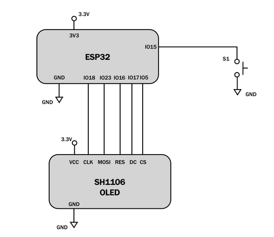
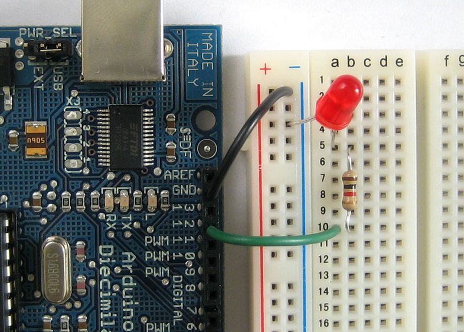
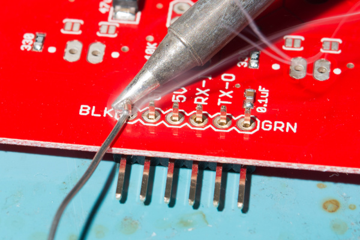
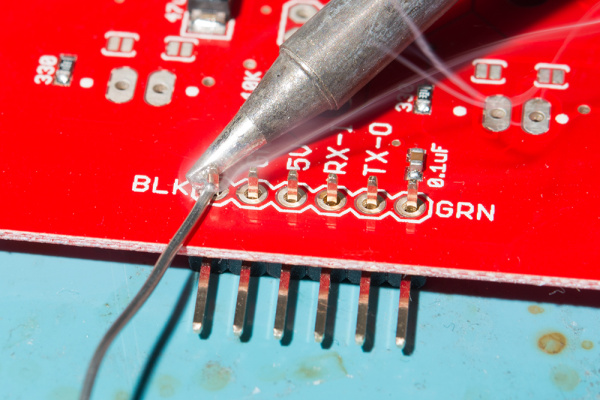
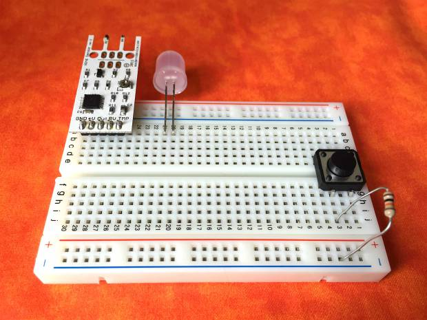
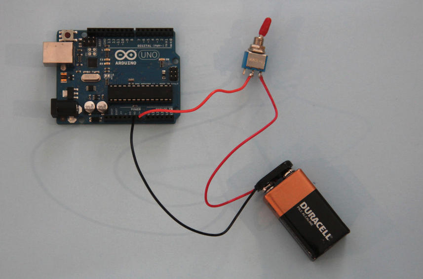

6.810 Engineering Interactive Technologies (fall 2018)
Intro to Electronics
work in progress
Goal
We are going to wire up a wind sensor and an LED to create a 'electronic candle' you can blow out.

Here's what we do today:
- solder the sensor together
- wireup sensor and LED using breadboard + microcontroller
- write code to detect sensor input and turn LED on/off using Arduino IDE
- remove power from laptop and instead use a 9V battery
- minutiarize the setup by soldering onto a protoboard
Breadboard
Certain rows and columns of the holes are electrically connected together.
Each column of 5 holes is connected internally. If you insert one end of side of a component into one set of the holes in a column of 5, and then insert one side into a second set of holes across the gap, the pins will not be connected together.
(example image of what works and what doesn't)
If you were to rip the back off your breadboard (DO NOT DO...we ruined the one in the photo so you don't have to!) you could more clearly see which rows and columns are connected.

The back of a breadboard, revealing the metal connectors inside. Note how there are many short connectors (with five connecting holes), and only several longer connectors, often called "rails" or "busses" and which we'll use for power distribution.
There are good and bad ways to wire a breadboard, just like there are good and bad ways to write code. The general rule is to keep the wires short and sweet...avoid large loops.
(show some valid and invalid wiring and explain why that is)
Connect Micro-Controller to Breadboard
The micro-controller has a 3.3V output (+) and a 0V/GND (-, ground).
Your breadboard has horizontal rails that allow to distribute the 3.3V and GND to anywhere on the board.
Use a jumper wire to connect the 3.3V to the red horizontal rail and another wire to connect the GND to the other horizontal rail.
Note that you could also switch the two rails with each other, they are only 'wires' themselves, but that would be confusing since they are color-coded.
(show some images maybe even with flipped rails to show that it doesn't matter)
Connect your LED
Before you can connect your LED, you also need a resistor.
The reason for this is that your micro-controller provides 3.3V, but your LED only needs XX.
If you supply more energy, your LED will blow up.
Here's the math:
To find the right resistor, you do the following:
Either use one of the color-charts as you see below:

Or you can use a Resistor Color Code Calculate website that gives you the right resistor:
https://www.allaboutcircuits.com/tools/resistor-color-code-calculator/
Now that you have your LED and the resistor, you can wire up your LED.
Use the following wiring diagram.
(placeholder)


If you don't know how to read these, ask a TA to help you better understand them, you will need this again further along in the tutorial (and in the future for your project).
Write Arduino Code to turn LED on/off
The Arduino has a setup() function that is called exactly once on start.
The loop() function runs repeatedly until you shut the micro-controller off.
Your LED is wired on Pin XX.
Thus, in the setup function you need to write this.
Then in the loop function you need to write this.
Add Button to your LED to turn it on/off
Next, add a button to your LED using this wiring chart.
You also need to extend your code in the following way:
Solder your wind sensor
The wind sensor doesn't come with legs (aka: header pins) to plug it into the breadboard, so we need to solder some on it.
Grab a soldering iron and some solder thread and ask a TA to show you how to do it if you have never done it before.
 

Connect your wind sensor to the board
Once you have the header pins soldered on, connect the windsensor to your circuit using the following wiring diagram.
You might ask yourself why we don't need a resistor for the wind sensor?
The wind sensor is a more sophisticated sensor in that it already sits on a board and has some additional electronics.
The actual sensor is only this part here:
(mark in some photo)
The other little components on the board are resistors and other elements that manage the sensors power, so we don't need to add them ourselves.
Finally, carefully bend both the wind sensor and the LED so they are laying flat down like this.

How does the wind sensor actually work?
Our wind sensor is actually what is called a “hot-wire” wind detector.
A wire warmed up by a little electricity will cool when air blows across it.
When the wire cools, its conductivity changes.
The other electronics on the board detect this change and turn it into values the Arduino can read.
Add code for detecting blowing air onto the sensor
Here's what to add to the code.
Potentially we can just give this out as a file.
Once you run this, you should be able to blow the LED on / off.
Replace laptop power via USB cable with a 9V battery
Next, we want to free our setup from our laptop.
Once the code is uploaded on the Arduino, it constantly keeps running, so there is no need for the laptop.
The only reason we are still using the laptop is because it's supplying the energy to the micro-controller.
However, we can replace the power supply using a battery and battery connector.
Using the switch on the battery is important because even when the candle is out, your Arduino is still running. So remember to power it down completely with the switch (or by unplugging the battery) or you’ll run out of juice very soon.

Minituarizing your setup
The breadboard and Arduino Uno are pretty chunky and will by hard to integrate into a physical prototype.
We can make everything much smaller by using an Arduino Nano and a protoboard.
However, for this, we need to solder again!

Transfer your design and ask a TA if you have any questions!
Create a new housing (optional)
If you are up for it, you could also 3D print a new housing for your candle.